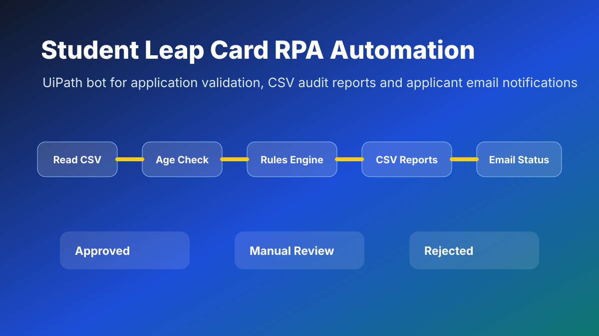

UiPath RPA Project
Student Leap Card Application Automation
UiPath proof-of-concept to automate Student Leap Card application triage using rule checks, CSV audit outputs and applicant email notifications.

PDF REPORT
Project Report.pdf
Report Preview
Click the report card or buttons to open the uploaded PDF exactly as it is stored in the projects folder.
View Full ReportSummary
The project automates application checks such as age, academic year, payment status and selfie score, then writes approved, manual review and rejected output files.
Detailed Explanation
- Reads applicant data from CSV files.
- Applies rule-based checks for eligibility.
- Creates audit-friendly output files.
- Sends personalised email notifications.
- Demonstrates business value through time savings and process consistency.